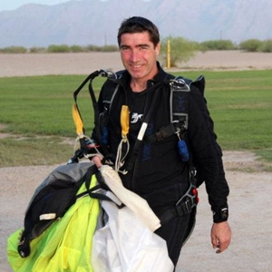
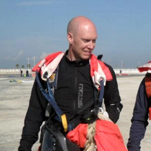
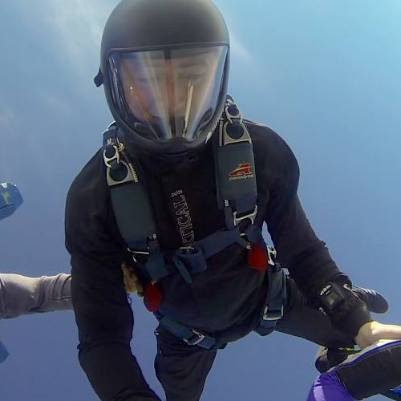
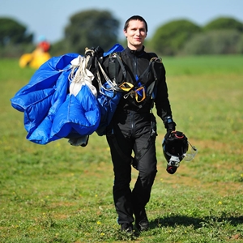

Team QFX

Ally Milne
6000+ Jumps400+ Hours Tunnel
AFF Instructor
Tandem Instructor
BPA Freefly Coach
Tunnel Coach
96-Way Vertical Eurorecord 2013
30-Way Vertical UK Record 2013
Ally is a full time skydiver at BPS Langar. In his free time he likes skydiving.
Paul Cooper
3000+ Jumps130+ Hours Tunnel
BPA Freefly Coach
Tunnel Coach
138-Way Vertical World Record 2012
142-Way Illinois State Record 2012
96-Way Vertical Eurorecord 2013
30-Way Vertical UK Record 2013
Paul is an extremely experencied skydiver who likes breaking records.


Gary Crisp
2000+ Jumps800+ BASE jumps
100+ Hours Tunnel
BPA Freefly Coach
Tunnel Coach
96-Way Vertical Eurorecord 2013
30-Way Vertical UK Record 2013
Gary is a skydiver and BASE jumper, who likes pushing the limits.
Pete Dennett
1400+ Jumps70+ Hours Tunnel
BPA Freefly Coach
Tunnel Coach
30-Way Vertical UK Record 2013
Pete lives 15 mins away from the windtunnel and it shows.


Ewan Cowie
1800+ Jumps50+ Hours Tunnel
BPA AFF Instructor
BPA FS Coach
BPA Freefly Coach
Tunnel Coach
30-Way Vertical UK Record 2013
Ewan is passionate about freeflying, photography and sunsets and tries to combine the three.